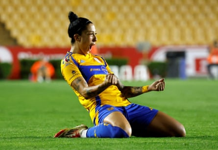
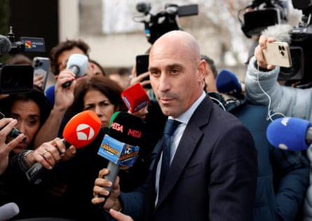
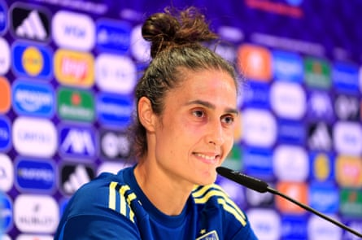

For years, they battled on multiple fronts: pushing back against the misogyny, misconduct and mistreatment of their football federation while simultaneously seeking to be the best in the world.
The conflicts of Spain’s women’s team exploded into public view after they won the World Cup in 2023 – a historic triumph that was almost immediately overshadowed by an unwanted kiss on the lips from the country’s football chief.
On Thursday evening, La Roja will take to the field for their first match of the Women’s Euro 2025, in a tournament that is set to be a showcase of the squad’s prowess on both battlefields. Widely seen as the favourites to win, the reigning world champions have also become a global symbol of women’s fight for equality, on and off the field.
“I think these players represent a ‘before and after’ for all young girls who want to play football,” said the film director Joanna Pardos. Her Netflix documentary It’s All Over : The Kiss that Changed Spanish Football delves into the long-running push for equal treatment that was thrust into the spotlight after Luis Rubiales planted an unsolicited kiss on the player Jenni Hermoso.
Jenni Hermoso, who plays for the Mexican team Tigres UANL, was not picked for Spain’s squad in this year’s Euros.Photograph: Daniel Becerril/Reuters
“Rubiales’ terrible behaviour at the World Cup was like the straw that broke the camel’s back,” said Pardos. “In a way, it was like the tip of an iceberg. I wish it hadn’t happened because it was disgusting, but the kiss helped to expose the whole iceberg underneath.”
Before the World Cup, 15 La Roja players faced public smears and belittling by some media after they refused to play for Jorge Vilda, the coach at the time, complaining about his tactics, training methods and controlling management style.
One year later, as media around the world captured Rubiales’ refusal to resign , with the football chief instead hitting out at the “scourge” of “false feminism”, the spotlight was recast on the team’s struggle for flight times that would allow them a decent night’s sleep before games and equal pay, among other problems.
Luis Rubiales speaking to the press during the trial over the kiss.Photograph: Juan Medina/Reuters
In the lead-up to the Women’s Euro 2025 , players were swift to highlight how things have changed. “I remember when I used to come play for the national team and I didn’t enjoy it; I just wanted to go home, to be honest,” the two-time Ballon d’Or winner Aitana Bonmatí told reporters late last month. “It was tough to play here; the situation wasn’t good … Now everything is better.”
That sentiment was echoed by La Roja’s other two-time Ballon d’Or winner, Alexia Putellas. “The conditions have changed a lot,” she said. “Especially in terms of travel, nutrition, training, things have changed radically. Now we’re enjoying conditions that are at the top level of the men’s team. It’s something that has taken a lot of effort and work by many people.”
Earlier this year, Rubiales was convicted of sexual assault over the unsolicited kiss. He was ordered to pay more than €10,000 in fines and barred from contacting or approaching Hermoso for a year. He has repeatedly denied any wrongdoing and his lawyer has said he will file an appeal against the verdict with the supreme court.
La Roja’s push for equality gripped Spain, setting off a conversation that swiftly spilled into other spheres of society. “What was very clear was that it was never about the kiss,” said Prof Helena Legido-Quigley, of Imperial College London. “It was much more about power, about consent and also the way that institutions protect power for men.”
With fellow members of Women in Global Health Spain, Legido-Quigley seized on the moment, calling for women in academia and healthcare who identified with Hermoso to share their own experiences. Within five days, more than 200 stories had poured in.
It was a clear sign of how the squad’s struggle had tapped into a wider vein of discontent, one that Legido-Quigley said she hoped would pave the way for Spain to start tackling the structural problems that had long allowed this behaviour.
Instead she watched as the backlash began. “A new narrative has emerged,” she said. “It’s about discrediting feminism and making people doubt the seriousness of these issues.”
While the pushback has seemingly been smaller in Spain than in some other countries, Legido-Quigley said she worried that this reaction would hinder the search for solutions.
The Spain national team’s head coach, Montse Tomé, during a Euro 2025 press conference.Photograph: Fran Santiago/Uefa/Getty Images
The global scrutiny of Spain came after years of the country positioning itself as a leader in women’s equality, putting in place laws and protocols to ensure equal treatment.
The longstanding treatment of the country’s female football squad, however, hinted at a glaring void of sanctions and inspectors to ensure these regulations were followed, said Mar Mas, who leads the Spain-based Association for Women in Professional Sports. “You can fill a city with traffic lights, but if there’s nobody to fine those who sail through red lights, it’s not going to make any difference.”
While Mas welcomed the changes that had been made, she emphasised that much work remained to be done.
When Spain takes to the pitch on Thursday, the squad will not include Hermoso, the all-time leading scorer for Spain’s national team with 57 goals in 123 matches – a controversial decision that has sparked questions about how far-reaching the federation’s changes have been.
In the wake of the World Cup kiss, the coach Montse Tomé left Hermoso out of the squad, describing it as a “way to protect her”. Tomé did eventually call Hermoso up again but this time has declined to do so, citing the competition for her position.
Mas said she believed Hermoso was being made to pay a personal price for speaking up. “What is clear in this country is that there are many women who have spoken out against their federations and who have ended up sacrificing their athletic careers. That is how it works. Despite all the laws on equality and protocols, women are still not fully protected when it comes to exercising their rights.”